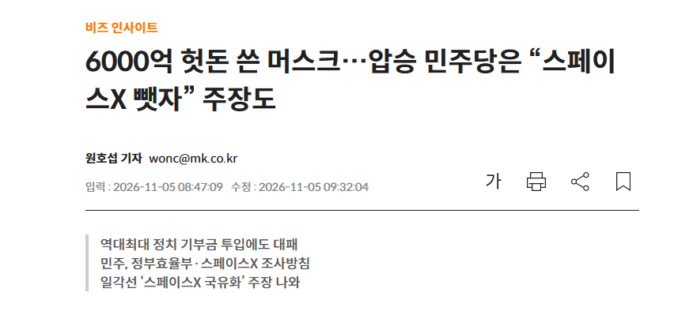

민주당은 머스크가 정부효율부를 이끌 당시 정부 사업을 축소한 과정과 스페이스X의 정부 계약 등을 조사할 방침이다. 우크라이나 전쟁에서 스페이스X의 위성통신 서비스 이용이 제한됐다는 의혹도 조사 대상으로 거론된다. 일부 민주당 인사는 스페이스X의 국유화까지 주장하고 있다. 다만 실제 국유화가 이뤄질 가능성은 낮다는 평가다.
일론아 어쩌겠나
한국으로 옮겨볼래?

민주당은 머스크가 정부효율부를 이끌 당시 정부 사업을 축소한 과정과 스페이스X의 정부 계약 등을 조사할 방침이다. 우크라이나 전쟁에서 스페이스X의 위성통신 서비스 이용이 제한됐다는 의혹도 조사 대상으로 거론된다. 일부 민주당 인사는 스페이스X의 국유화까지 주장하고 있다. 다만 실제 국유화가 이뤄질 가능성은 낮다는 평가다.
일론아 어쩌겠나
한국으로 옮겨볼래?
바다 건너 민주당 삽질을 댓글에서 이악물고 쉴드치는 개붕이들은 대체 뭘까...니들 돈받고 하는거지? 무료변호사 아니지? ㅋㅋ
바다건너 트럼프 삽질할때 아무말 안하셧죠..?
트럼프건 미민당이건 미국 소식은 죄다 ㅋㅋㅂㅅ거리는게 개드립이긴함. 유독 특정 삽질에만 과민반응하는 호감고닉 단골들이 자주 출몰하고
바코드닉
저새끼들도 무능이 트렌드임?
일론은 뺏기느니 불태울걸ㅋㅋ
어어...뭐지 이거 어디서본거같은데
일론이 선 존나 넘고 다닌 것도 맞는데 그렇다고 씨발 보복을 저따구로 하는 새끼들도 제정신은 아니구만 ㅋㅋ
합'중국'
병신 피했더니 또다른 병신 등장!!
휙 이랬다 휙 저랬따
야 미국은 지금 ㅈㄴ게 극과극으로 갈렸다는걸 다시금 체감하네
시빌워 코앞 ㅋㅋㅋ
미친 일진놀이 vs 안드로젠더리스호모섹슈얼
https://naver.me/5NesiN4M
기사링크 없는 렉카질이야 뻔하지
'일부 민주당 인사는 스페이스X의 국유화까지 주장하고 있다. 다만 실제 국유화가 이뤄질 가능성은 낮다는 평가다.'
경제지 제목장사 질인데
"전 장관이 팟캐스트에서" "진보 성향 논객이 방송에서" "폴 크루그먼이 비슷한 사례를 언급했다"
-> 민주당이 스페이스X 국유화 하려고 한다!
일부 민주당 인사는 스페이스X의 국유화까지 주장하고 있다. 다만 실제 국유화가 이뤄질 가능성은 낮다는 평가다.
병신아 본문이나 읽고 지랄을 해라
아 위에 정사판 애들 ㅈㄴ 웃기네 ㅋㅋㅋㅋㅋㅋ
로버트 라이시 전 미국 노동장관은 최근 한 진보 성향 팟캐스트에서 “머스크에 대한 자금 지원을 끊어야 한다”며 민주당이 의회 감독 청문회를 넘어 스타링크와 스페이스X 국유화를 위한 준비에 나서야 한다고 주장했다.
조지 W. 부시 행정부에서 활동했던 데이비드 프럼과 니콜 월리스도 방송에서 유사한 주장을 제기했다. 경제학자 폴 크루그먼 역시 제2차 세계대전 당시 미국 정부가 민간 기업을 통제했던 사례를 언급했다.
하나는 전 장관이 팟캐스트에서, 둘은 직함 호칭도 없고, 폴 크루그먼은 존나 원론적 이야기고
ㅋㅋㅋ
일부 민주당 인사
= 의원일수도 보좌관일수도 당내 인턴일수도 일수 있는 아주 편하고 광범위한 문구지
진짜로 잡고 저격하려고 하면 xxx의원이라고 나왔겠지
설사 나왔다해도 주류일리가 없을꺼고
가끔보면 우리나라랑 미국하고 동일시 하는데 미민당은 왼쪽이 아님
저러다가도 이익에 따라서 얼마든지 바꿀수 있는 놈들임
'일부 민주당 인사는 스페이스X의 국유화까지 주장하고 있다. 다만 실제 국유화가 이뤄질 가능성은 낮다는 평가다.'
경제지 제목장사 질인데
니 댓글이랑 내가 쓴 본문이랑 뭐가 다른지 말해봐
제목만 보면 마치 민주당 여론이 스페이스x를 뺐자라고 보이는데
정작 내용은 일부 민주당 인사라고 나오지
이런 문구를 기자가 모르고 썼을까?
충분히 혼동되니깐 지금 댓글 상태에 문해력 딸리는 너까지 다 낚이는거지
그래서 본문에 내가 써놨어? 안써놨어?
니가 쓴 댓글과 내 본문의 차이를 말하라니깐
제목이 어쩌구 저쩌구 블라블라
글도 제대로 보지못하고 잘난듯이 씨부린 난독 병신새끼는 나였고
뭣도 모르고 모욕까지 해서 미안합니다
앞으로는 댓글 달기전에 두번은 보고 달겠습니다
쪽찌 기능이 있으면 햄버거라도 보내고 싶은데 진심 반성함
나는 ㅅㅂ 미국 민주당이 공산당이라는 게 프로파간다인 줄 알았지
미친놈 vs 병신 대전에서 병신이 이김
과연 그 파급력은?
꼬라지보니 삽질하다가 다음대선 공화당이 또 먹을듯 ㅅㅂㅋㅋㅋ
ㅋㅋㅋㅋ 이새끼들 저번에 괜히 진게 아니야
오죽하면 럼프한테 지겠어 ㅋㅋㅋㅋㅋㅋ
민주당 내분도 심각해서 어떻게 될지 ㅋㅋ
정치보복 극혐하긴 하는데 머스크가 한짓들도 정상범주는 훨씬 벗어나긴했지
왜 꼭 적당히 하질못하고 좆병신같은 뇌절을 쳐하는지
공화당 올인한 새끼가 앞날이 험난할껄
국유화같은소리하네
민주당 지금 압승했다고 꼴리는대로 하면 대선 또 질건디...
민주당 이 정신병자놈들이... 트럼프가 싫어서 찍어준것뿐인데 선 씨게 넘네
민주당이 하는 짓은 공산당이야
정경유착으로 해쳐먹은 돈 존나 거대하고 그걸로 머스크가 이득을 본거면 스페이스X든 테슬라든 그냥 반독점법으로 토막쳐버리고 죽을때까지 감옥살이 할지 사법거래로 살아남을지 양자택일 협박 존나 들어갈거라 봄
한국 오면 뭐 달라짐? ㅋㅋ
걍 빨리 머스크 인더스트리 차려갖고 슈트하나만들어라
뺏을라면 사야하니 호재네??
승리에 취해서 쌉소리 하는놈들 나오기 시작했나보네
지금 한국오면 광주에 뭐라도 지으라고 지랄할텐데ㅋㅋㅋㅋㅋㅋㅋㅋ
븅신들 적당히를몰라;;;;
다만 실제 국유화가 이뤄질 가능성은 낮다는 평가다.
이런식으로 지른다음 아님말고 하는 경우가 한두건인가 ㅋㅋ